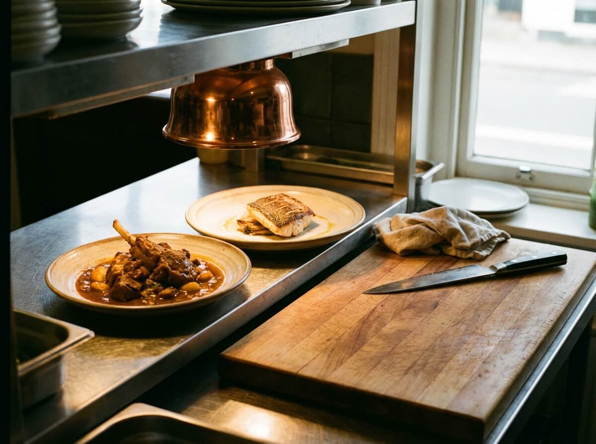
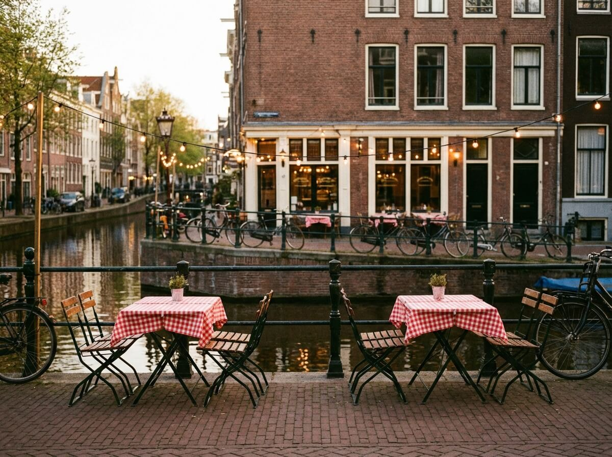
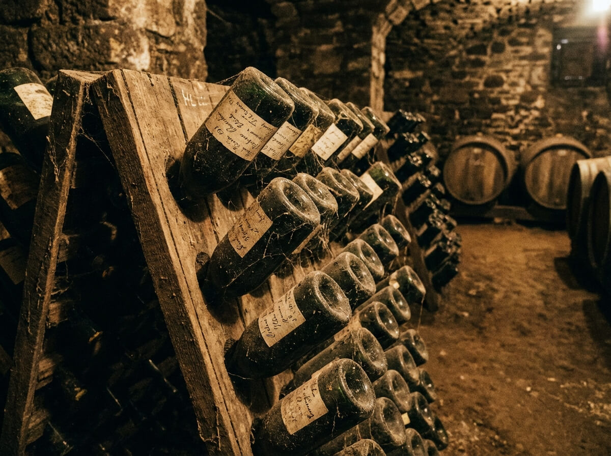
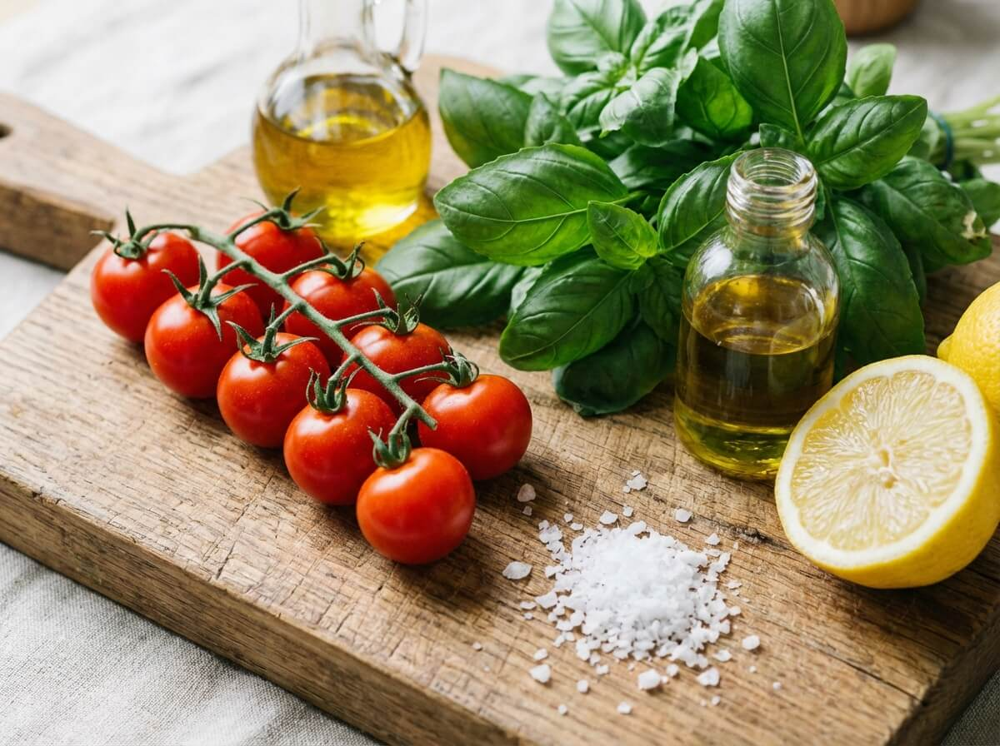
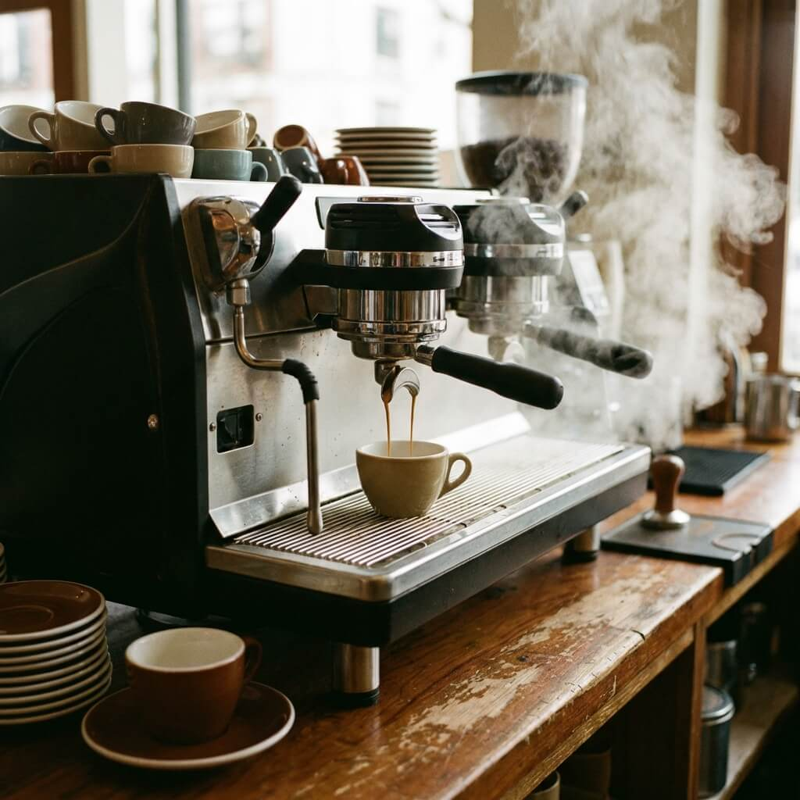
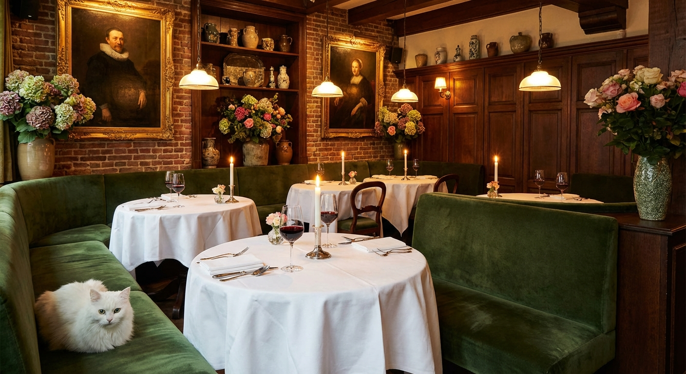
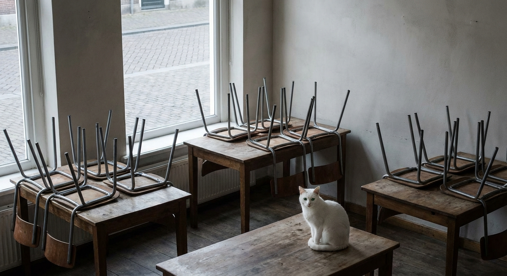
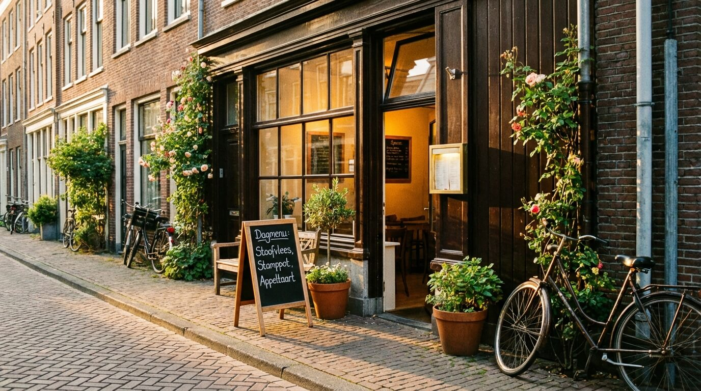

Bistro Bloom in Beeld
Een kijkje in onze keuken, zaal en de gerechten die ons hart vormen.









Bij Bistro Bloom draait alles om eerlijk eten en warme gastvrijheid. Verse ingredienten, ambachtelijke bereidingen en een kaart die meebeweegt met de seizoenen. Schuif aan en proef het verschil.
Van een ontspannen lunch tot een intiem diner met wijnbegeleiding — bij Bistro Bloom voelt iedereen zich thuis.
Verse salades, huisgebakken focaccia en warme gerechten die dagelijks wisselen. Onze lunch is de perfecte pauze in een drukke dag, met altijd een vegetarische optie.
Ons avondmenu biedt drie tot vijf gangen met seizoensgebonden ingredienten. Van een romige pompoensoep in de herfst tot gegrilde zeebaars in de zomer — altijd verrassend.
Vier uw bijzondere moment in onze sfeervolle achterzaal. Plaats voor 4 tot 14 gasten met een op maat samengesteld menu en persoonlijke bediening.
Bistro Bloom bij u op locatie. Van borrelplanken en fingerfood tot complete diners. Wij verzorgen alles met dezelfde aandacht als in ons eigen restaurant.
Elke zes weken vernieuwen wij ons menu volledig. Onze chef werkt direct met lokale tuinders en boeren om de allerbeste producten van het moment op uw bord te brengen.
Onze sommelier helpt u graag bij het kiezen van de perfecte wijn bij uw gerecht. Van biologische wijnen tot klassieke favorieten — er is voor elke smaak iets bijzonders.
Van verse ingredienten tot een prachtig gerecht — bekijk de transformatie op het bord.


Tevreden Gasten
Jaar Ervaring
Gerechten per Seizoen
Google Reviews

Bistro Bloom is in 2018 geboren uit de liefde voor eerlijk eten. Eigenaar en chef Lisa gelooft dat de beste gerechten ontstaan wanneer je met respect voor het product kookt. Geen overbodige franje, maar pure smaken die voor zichzelf spreken.
Ons team is klein maar gedreven. Van de keuken tot de bediening — iedereen draagt bij aan de warme, persoonlijke sfeer waar Bistro Bloom om bekend staat in Rotterdam.
Rotterdam heeft ons in het hart gesloten. Lees waarom.
"Bistro Bloom voelt als thuiskomen. De gerechten zijn simpel maar ongelooflijk smaakvol. Het seizoensmenu met de geitenkaas-tarte was het hoogtepunt van mijn week. Absolute aanrader!"
"We hadden een prive diner voor ons jubileum en het was magisch. Chef Lisa had een speciaal menu bedacht met onze favoriete smaken. De aandacht voor detail was buitengewoon."
"De lunchkaart is echt genieten. Elke keer als ik kom is er iets nieuws. De soep van de dag is altijd een schot in de roos en de focaccia is de beste die ik in Rotterdam heb gehad."
Een kijkje in onze keuken, zaal en de gerechten die ons hart vormen.





Alles wat u wilt weten over eten bij Bistro Bloom.
Voor de lunch bent u altijd welkom zonder reservering, mits er plek is. Voor het diner raden wij sterk aan om te reserveren, vooral in het weekend. Online boeken kan 24/7 via onze website.
Zeker! Ons menu biedt altijd minimaal twee vegetarische en een veganistisch gerecht. Chef Lisa is zelf groot fan van plantaardige keukens en experimenteert graag met groenten als hoofdrol.
Wij bieden catering voor groepen vanaf 10 personen. Neem contact op voor een vrijblijvend gesprek. Wij stellen een menu samen dat past bij uw gelegenheid, seizoen en budget.
Ja! Ons terras aan de Witte de Withstraat biedt plaats aan 24 gasten. Bij mooi weer serveren wij hier zowel lunch als diner. Het terras is verwarmd, dus ook in de herfst kunt u buiten genieten.
Wij zijn geopend van woensdag tot en met zondag. Lunch van 12:00 tot 15:00 en diner van 18:00 tot 22:00. Op zondag serveren wij ook een uitgebreide brunch van 10:00 tot 14:00.
Reserveer uw tafel bij Bistro Bloom en ontdek waarom Rotterdam zo van ons houdt. Eerste bezoek? Chef Lisa verwelkomt u graag persoonlijk.
Reserveer Nu